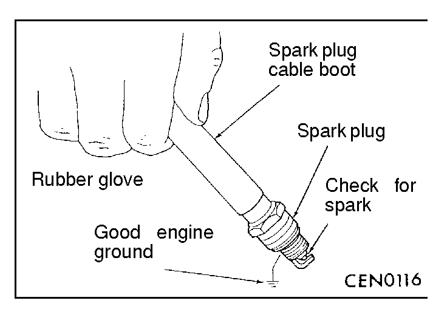

![[Previous]](https://mitsubishitechinfo.com/data/F24S/BUTTONS/fprevg.png)
![[Next]](https://mitsubishitechinfo.com/data/F24S/BUTTONS/fnextg.png)

ON-VEHICLE SERVICE
SPARK COIL TEST
WARNING
The direct ignition system generates approximately 40,000 volts. Personnel injury could result from contact with this system. Wear rubber gloves and rubber-soled shoes while working on the ignition system.
(1)Remove the cable from No. 2 spark plug. Insert a clean spark plug into the spark plug boot, and ground the plug to the engine.
Caution
Spark plug wire damage may occur if the spark plug is moved more than 6mm (1/4 inch) away from the engine ground.
(2)Crank the engine and look for spark across the electrodes of the spark plug.
Repeat the above test for the three remaining spark plug cables.
If there is no spark during any of the tests, check the camshaft position sensor and crankshaft position sensor. (Refer to GROUP 13A - Troubleshooting.)
(3)If one or more tests show irregular, weak, or no spark, go to the Ignition Coil Inspection and Spark Plug Cable Inspection.